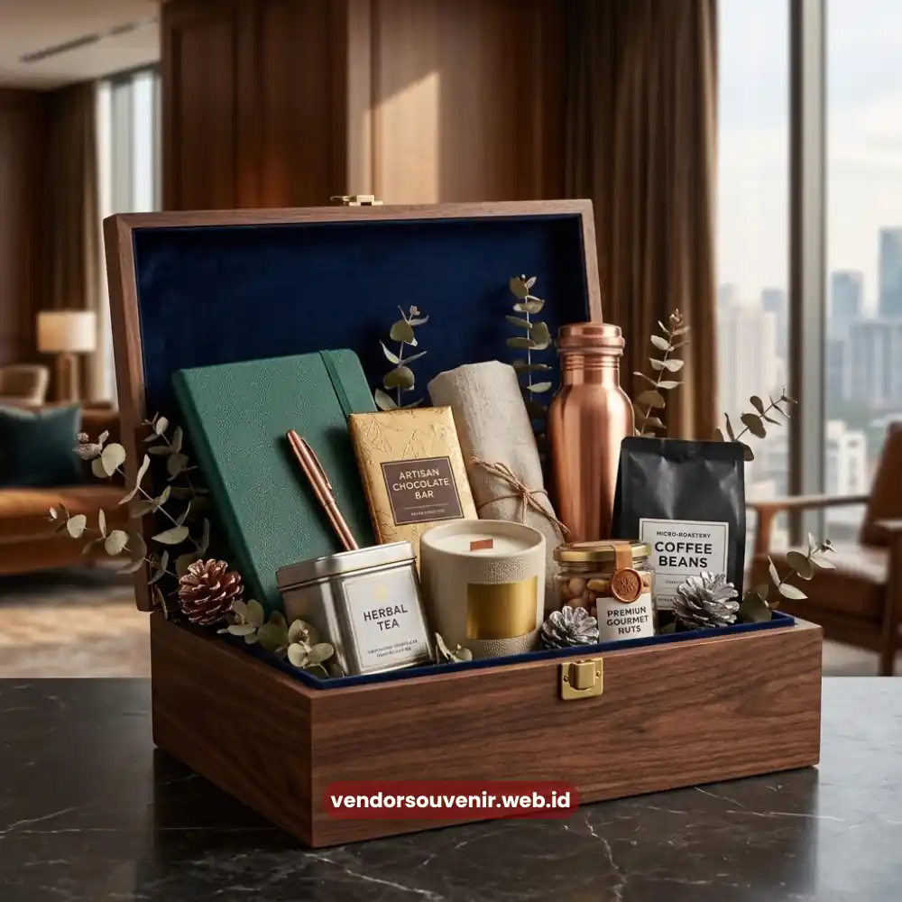

Daftar Isi
Tren corporate gift hampers tahun ini bergerak ke arah personalisasi tinggi, kombinasi produk lokal berkualitas, dan kemasan premium yang mencerminkan identitas brand secara konsisten.
Perusahaan kini lebih memilih hampers yang menghadirkan pengalaman, mulai dari produk artisan, camilan sehat, hingga perlengkapan kerja fungsional, dibandingkan sekadar parsel makanan konvensional.
Pergeseran ini didorong oleh kebutuhan membangun relasi bisnis yang lebih personal sekaligus memperkuat citra profesional di mata klien, mitra kerja, maupun karyawan.
Ringkasan Inti
- Personalisasi dan storytelling brand menjadi faktor utama dalam pemilihan corporate gift hampers.
- Produk lokal dan kemasan ramah lingkungan makin diminati perusahaan yang peduli citra berkelanjutan.
- Hampers tematik untuk momen tertentu (akhir tahun, pelantikan, ulang tahun perusahaan) tumbuh signifikan.
- Kualitas kemasan menjadi penentu kesan pertama yang diterima klien atau mitra bisnis.
- Vendor Souvenir hadir sebagai mitra tepercaya untuk merancang corporate gift hampers sesuai kebutuhan brand Anda.
Apa Itu Corporate Gift Hampers dan Mengapa Penting bagi Bisnis?
Corporate gift hampers adalah paket hadiah yang dirancang khusus oleh perusahaan untuk diberikan kepada klien, mitra bisnis, atau karyawan sebagai bentuk apresiasi dan strategi menjaga hubungan jangka panjang.
Berbeda dengan hadiah pribadi, hampers korporat biasanya disusun dengan mempertimbangkan citra brand, konsistensi kualitas, dan pesan bisnis yang ingin disampaikan.
Pentingnya corporate gift hampers terletak pada fungsinya sebagai alat komunikasi non-verbal. Sebuah hampers yang disusun rapi dengan isi relevan dapat menyampaikan profesionalisme, perhatian, dan apresiasi tanpa perlu kata-kata panjang.
Bagi banyak perusahaan, momen pemberian hampers menjadi kesempatan emas untuk memperkuat loyalitas relasi bisnis sekaligus meninggalkan kesan positif yang bertahan lama.
Tren Apa Saja yang Mendominasi Corporate Gift Hampers Tahun Ini?
Tren corporate gift hampers tahun ini didominasi oleh personalisasi, keberlanjutan, dan pengalaman multisensori yang membuat penerima merasa benar-benar diperhatikan. Berikut beberapa arah yang paling terlihat di dunia korporat.
Personalisasi Berbasis Identitas Brand
Perusahaan semakin sering menyertakan elemen branding yang halus namun kuat, seperti warna korporat, logo minimalis pada kemasan, hingga kartu ucapan yang ditulis sesuai nada komunikasi brand. Personalisasi ini membuat hampers terasa eksklusif dan tidak generik.
Produk Lokal dan Kolaborasi UMKM
Banyak perusahaan mulai memasukkan produk dari pelaku usaha lokal ke dalam hampers mereka. Selain mendukung citra sosial perusahaan, produk lokal biasanya menawarkan cita rasa dan cerita unik yang sulit ditemukan pada produk massal.

Kemasan Hampers Korporat Eksklusif
Kemasan Ramah Lingkungan
Kesadaran akan isu lingkungan mendorong perusahaan memilih kemasan yang dapat didaur ulang atau berbahan dasar alami. Tren ini sejalan dengan meningkatnya perhatian stakeholder terhadap praktik bisnis berkelanjutan.
Hampers Tematik untuk Momen Spesifik
Hampers yang dirancang khusus untuk momen seperti Lebaran, akhir tahun, atau pencapaian target perusahaan semakin populer karena relevansinya yang tinggi dengan situasi penerima.
Faktor Apa yang Mempengaruhi Pemilihan Corporate Gift Hampers Perusahaan?
Pemilihan corporate gift hampers dipengaruhi oleh anggaran, profil penerima, momen pemberian, dan pesan bisnis yang ingin disampaikan perusahaan.
Anggaran menjadi titik awal yang menentukan skala dan kualitas isi hampers, namun profil penerima, apakah klien korporat, mitra strategis, atau karyawan internal, akan menentukan jenis produk yang paling relevan dan berkesan.
Momen pemberian juga berperan besar. Hampers untuk perayaan akhir tahun tentu memiliki nuansa berbeda dibandingkan hampers untuk menyambut kerja sama baru.
Selain itu, pesan bisnis yang ingin disampaikan, misalnya kesan mewah, kesan hangat dan personal, atau kesan peduli lingkungan, akan memandu pemilihan tema dan komposisi isi hampers secara keseluruhan.
Bagaimana Cara Memaksimalkan Corporate Gift Hampers untuk Memperkuat Citra Bisnis?
Corporate gift hampers akan memberikan dampak maksimal jika disusun dengan strategi yang selaras dengan tujuan komunikasi perusahaan, bukan sekadar formalitas tahunan.
Pertama, pastikan komposisi hampers mencerminkan nilai brand, baik dari sisi kualitas produk maupun tampilan visual kemasan. Kedua, sesuaikan isi hampers dengan segmen penerima agar terasa relevan dan tidak generik.
Ketiga, perhatikan waktu pengiriman agar hampers sampai pada momen yang tepat sehingga dampaknya lebih terasa.
Terakhir, libatkan mitra profesional yang memahami kebutuhan korporat dalam proses produksi, mulai dari kurasi produk hingga proses pengemasan, sehingga hasil akhirnya konsisten dan bebas dari kesalahan teknis yang dapat menurunkan kesan profesional perusahaan.

Solusi Gift Set dari Vendor Terpercaya
Kesalahan Umum dalam Menyusun Corporate Gift Hampers Korporat
Kesalahan yang paling sering terjadi adalah menyamaratakan isi hampers untuk semua penerima tanpa mempertimbangkan konteks relasi bisnis. Hal ini membuat hampers terasa impersonal dan kurang berkesan.
Kesalahan lain adalah mengabaikan kualitas kemasan, padahal kemasan adalah elemen pertama yang dilihat dan dinilai oleh penerima sebelum membuka isinya.
Selain itu, banyak perusahaan terlambat merencanakan produksi hampers sehingga terburu-buru dalam proses kurasi dan pengemasan, yang berisiko menurunkan kualitas hasil akhir.
Perencanaan yang matang jauh sebelum momen pemberian akan menghindarkan perusahaan dari risiko tersebut.
Kesimpulan
Corporate gift hampers bukan lagi sekadar formalitas, melainkan strategi komunikasi bisnis yang dapat memperkuat relasi dan citra perusahaan jika dirancang dengan tepat.
Personalisasi, keberlanjutan, dan relevansi momen menjadi tiga kunci utama yang menentukan keberhasilan sebuah hampers korporat.
Jika Anda ingin merancang corporate gift hampers yang mencerminkan identitas bisnis sekaligus meninggalkan kesan mendalam bagi klien dan mitra kerja, Vendor Souvenir siap membantu mewujudkannya.
Butuh Bantuan Merancang Hampers Kantor?
Tim ahli kami siap membantu Anda menyusun paket hadiah eksklusif yang menarik.
Pilihan barang akan disesuaikan dengan ketersediaan budget dan kebutuhan Anda.
Seluruh desain kemasan akan kami selaraskan dengan identitas visual perusahaan Anda.
Dapatkan penawaran harga terbaik untuk pesanan massal!
FAQ
Apa perbedaan corporate gift hampers dengan parsel biasa?
Corporate gift hampers dirancang dengan mempertimbangkan citra brand dan tujuan bisnis, sementara parsel biasa umumnya bersifat umum tanpa elemen branding khusus.
Kapan waktu terbaik memberikan corporate gift hampers?
Waktu terbaik umumnya bertepatan dengan momen penting seperti akhir tahun, hari raya, atau pencapaian kerja sama bisnis, tergantung tujuan komunikasi perusahaan.
Apakah corporate gift hampers bisa disesuaikan dengan anggaran perusahaan?
Bisa, komposisi dan skala isi hampers umumnya dapat disesuaikan dengan berbagai tingkatan anggaran tanpa mengurangi kesan profesional.
Apakah isi hampers harus selalu berupa makanan?
Tidak selalu. Tren saat ini menunjukkan variasi isi yang lebih luas, mulai dari perlengkapan kerja, produk perawatan diri, hingga produk lokal pilihan.
Bagaimana cara memastikan hampers mencerminkan identitas brand perusahaan?
Identitas brand dapat ditonjolkan melalui warna kemasan, elemen logo yang halus, kartu ucapan bernada khas perusahaan, serta kurasi produk yang selaras dengan citra bisnis.
Maroon Souvenir
Partner Corporate Gift terpercaya di Indonesia. Berpengalaman melayani ratusan perusahaan sejak 2018.
Lihat Portofolio Kami